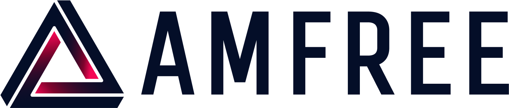

Parcours professionnel
Expériences professionnelles
Une expérience en recherche et développement industriel, avec une approche centrée sur l’analyse du besoin, l’exploration de solutions et la validation technique.
Septembre 2025 — Février 2026

AMFREE — Assistant ingénieur R&D
Illkirch-Graffenstaden, France · Fabrication additive métallique grand format
Participation à un sujet de recherche et développement confidentiel, depuis l’analyse du besoin jusqu’à l’étude de faisabilité de solutions techniques. L’expérience a mobilisé une démarche structurée de recherche, de conception et d’expérimentation en contexte industriel.
Missions et méthodes
- Analyse du besoin et identification des contraintes techniques.
- Recherche et comparaison de solutions technologiques.
- Conception de solutions mécaniques et réalisation de prototypes CAO.
- Préparation et réalisation d’essais expérimentaux.
- Échanges techniques avec des interlocuteurs industriels et fournisseurs.
Compétences développées
Conception mécaniqueRecherche
technologiquePrototypage CAOExpérimentationAnalyse de faisabilitéTravail en équipe